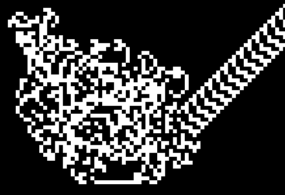

langton's ant
simulator
contador
información
La Hormiga de Langton fue creada por Chris Langton en 1986. Una hormiga se mueve por una cuadrícula bidimensional de células blancas o negras. La hormiga puede moverse en una de cuatro direcciones posibles: hacia arriba, hacia abajo, hacia la izquierda o hacia la derecha. En cada iteración, la hormiga verifica el color de la célula en la que se encuentra y toma una decisión basada en ese color. Luego, cambia el color de la célula en la que se encuentra y se mueve en la dirección correspondiente.reglas
Si la hormiga se encuentra en una célula blanca, gira a la derecha 90 grados, cambia el color de la célula a negro y se mueve hacia adelante.Si la hormiga se encuentra en una célula negra, gira a la izquierda 90 grados, cambia el color de la célula a blanco y se mueve hacia adelante.
patrón producido
importancia
La hormiga de Langton es un ejemplo interesante de cómo la complejidad puede surgir a partir de reglas simples y cómo los sistemas dinámicos pueden producir comportamientos sorprendentes. Además, ha sido útil en la investigación de la teoría de la complejidad y la inteligencia artificial.créditos
Simulación desarrollada por Aydin Dueñas Salman como proyecto final para la materia de Simulación de Sistemas para Ingeniería de Software en la Universidad de Sonora